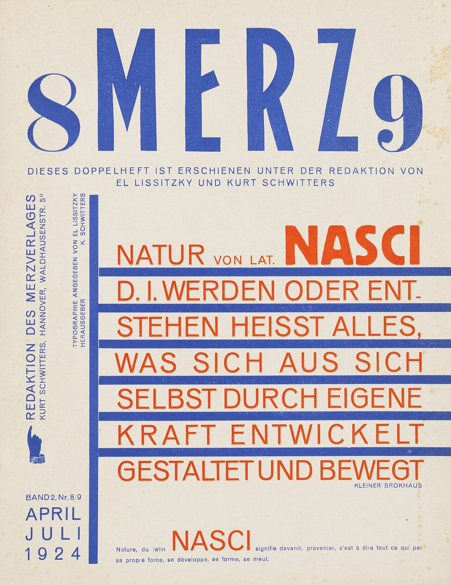

References / Editorial / 509
Merz 8/9: Nasci, 1924
El Lissitzky and Kurt Schwitters edit the double issue of Merz on nature and form. Lissitzky’s title page sets a Brockhaus definition in red sans-serif capitals between blue bars.
- Source
- Wikimedia Commons: 8 Merz 9 / Nasci (Ketterer Kunst copy)
- Creator
- El Lissitzky (typography) and Kurt Schwitters (co-editor)
- Made
- April–July 1924 (as printed on the page)
- Style
- Dada (agent-proposed, not yet reviewed by a person)
- Moods
- Constructive, typographic, experimental
- Evidence
- Inspected the Commons image of a copy sold by Ketterer Kunst (3850 × 5003 px original, viewed at 1200 px). Commons gives the size as 30.8 × 23.5 cm. A second Commons copy from charnelhouse.org exists (Commons) and was not compared.
- Reviewed
- Rights
- Open license, stored. License: public domain. Rights policy


Context
Commons describes the image as the title page of Merz double issue 8/9, 1924, title design by El Lissitzky, 30.8 × 23.5 cm, from Ketterer Kunst, tagged PD-scan (PD-old-auto-expired, death year 1941). Commons.
The page itself states that the double issue appeared under the editorship of El Lissitzky and Kurt Schwitters, with typography by Lissitzky.
Wikipedia says Lissitzky edited and typeset Merz 8/9. The Dada style record cites it as a work between Dada and Constructivism. Compare Merz 1.
Observed
- “MERZ” is set in tall blue condensed sans-serif capitals, between a blue serif “8” and “9” of a different face.
- Below it, the definition “NATUR von lat. NASCI d. i. werden oder entstehen heisst alles, was sich aus sich selbst durch eigene Kraft entwickelt gestaltet und bewegt” runs in red sans-serif capitals, with “NASCI” in a heavy bold.
- Each red line sits between thick blue horizontal bars that start at one long blue vertical bar at the left.
- Two imprints run vertically at the left: “REDAKTION DES MERZVERLAGES …” and “TYPOGRAPHIE ANGEGEBEN VON EL LISSITZKY”.
- A small blue pointing hand points up at the left margin. The date “APRIL JULI 1924” is letter-spaced in blue capitals at lower left.
- A French version of the definition, with a red “NASCI”, is set in small type at the bottom. The paper is off-white, and only red and blue inks are used.
Why it belongs
The page shows where Dada typography ends: the mixed faces, the pointing hand, and the vertical imprints survive, but the bars and the aligned text block give a clear order. It is a good contrast record for the Dada rubric.
Borrow
Run thick bars between lines of a text block, all starting from one vertical bar.
Set a running imprint vertically in small capitals along the left edge.
Measured
Machine-extracted by tools/image-traits.py on . Full measurement.
- Mean chroma
- 0.18
- Palette
- #e7e0cf 69%
- #3e56a9 12%
- #dc5023 3%
- #5567ab 2%
- #ead6c0 2%
- #afb1c4 1%
- #9da1bc 1%
- #cecdd3 1%

